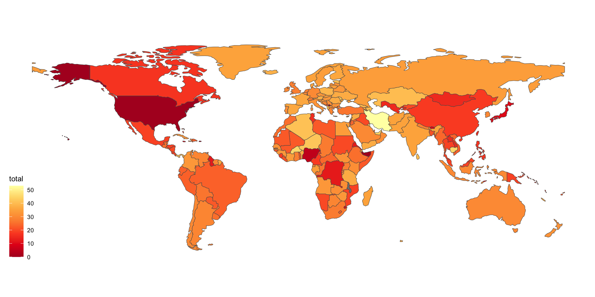

# A tibble: 204 × 5
country notes paid_vacation public_holiday total
<chr> <chr> <chr> <chr> <chr>
1 Afghanistan "Employees … 20 15 35
2 Albania "Employees … 28 12 40
3 Algeria "The paid a… 30 11 41
4 Andorra "Workers ar… 31 14 45
5 Angola "The annual… 22 11 33
6 Antigua and Barbuda "The annual… 12 11 23
7 Argentina "14 calenda… 10 19[13] 29
8 Armenia "Generally,… 20 12[17][18] 36
9 Australia "An employe… 20 10 30
10 Austria "Employees … 25 13 38
# ℹ 194 more rows
Cont.
Oops, hyper links are not read properly and we also have other issues (use View(holiday_df))
The parsing for Luxembourg is wrong….
holiday_df |>filter(row_number() %in%102:113)
# A tibble: 12 × 5
country notes paid_vacation public_holiday total
<chr> <chr> <chr> <chr> <chr>
1 Luxembourg "The… Type of extr… Civil servants Priv…
2 Type of extraordinary lea… "Civ… Private-sect… <NA> <NA>
3 Marriage "3 d… 3 days <NA> <NA>
4 Civil partnership "1 d… 1 day <NA> <NA>
5 Death of spouse/civil par… "3 d… 3 days <NA> <NA>
6 Death of child under 18 "5 d… 5 days <NA> <NA>
7 Death of grandparent or g… "1 d… 1 day <NA> <NA>
8 Death of sibling living i… "3 d… - <NA> <NA>
9 Marriage of child "1 d… 1 day <NA> <NA>
10 Moving house (once per 3-… "2 d… 2 days <NA> <NA>
11 Adoption of child under 16 "10 … 10 days <NA> <NA>
12 Birth of child (for fathe… "10 … 10 days <NA> <NA>
# A tibble: 5 × 5
country notes paid_vacation public_holiday total
<chr> <chr> <chr> <chr> <chr>
1 Bolivia "There are different sca… 15/20/30 11 26/3…
2 Brazil "The length of annual le… 10/14/18/22 13 23/2…
3 China "The duration of the ann… 5/10/15 13 18/2…
4 Denmark "Employees are entitled … 25/30 10 35/40
5 Poland "26 working days per yea… 26/20 13 39/33
# A tibble: 3 × 5
country notes paid_vacation public_holiday total
<chr> <chr> <chr> <chr> <chr>
1 Type of extraordinary leave Civi… Private-sect… <NA> <NA>
2 Death of sibling living in… 3 da… - <NA> <NA>
3 Peru Empl… 11-22 12 23-34
Data wrangling
Well, the data will be much easier to clean if all the numbers are in 2-digits format with padding zeros for the single digit numbers, e.g. 5/10/15 -> 05/10/15.
final_df <- holiday_df3 |>left_join(country_df2, by ="code")
Warning in left_join(holiday_df3, country_df2, by = "code"): Detected an unexpected many-to-many relationship between `x` and `y`.
ℹ Row 44 of `x` matches multiple rows in `y`.
ℹ Row 168 of `y` matches multiple rows in `x`.
ℹ If a many-to-many relationship is expected, set `relationship =
"many-to-many"` to silence this warning.
Noooo… where has been messed up in our joining…
Cont.
Row 44 of x matches multiple rows in y.
holiday_df3 |>filter(row_number() ==44)
# A tibble: 1 × 6
country notes paid_vacation public_holiday total code
<chr> <chr> <dbl> <dbl> <dbl> <chr>
1 Cyprus 20 working days of… 20 14 34 CYP
It doesn’t have a code and hence matching other NAs
holiday_df3 |>filter(is.na(code))
# A tibble: 3 × 6
country notes paid_vacation public_holiday total code
<chr> <chr> <dbl> <dbl> <dbl> <chr>
1 European Union "European U… 20 0 20 <NA>
2 Kosovo "Labor Law … 20 12 32 <NA>
3 Micronesia "" 0 0 0 <NA>
Plot total annual leave by country
final_df |>ggplot() +geom_sf(aes(geometry = geometry, fill = total)) +scale_fill_distiller(palette ="YlOrRd", direction =-1) + ggthemes::theme_map()

Summary
We have a practical session to chain a few components we have learnt so far together:
rvest for webscraping,
dplyr, stringr for wrangling data,
rnaturalearth and sf for map related processing
ggplot2 and ggthemes for plotting.
countrycode for reconciling country names from multiple data sources.
Good practice to carry onwards…
Numbers are all padded with zeros to have the same number of digits - when you name YOUR files: 01-extract-data.R rather than 1-extract-data.R
Having a corresponding code makes joining name-related text data easier
Summary
I hope you can see that data analysis is not that straight forward because data never ever come to you as expected.
You can have an outline of things to expect (Slide 2), but you generally won’t know what you will encounter until you start working on the data (different formats of number recording, the joining hiccup with country names, the many-to-many join issue …).
This point is commonly under-appreciated in industry and/or academia because everything is straight forward when looking at the final script when everything is figured out.
Summary
I hope by the end of the semester, you are comfortable with scraping some data, cleaning them, making some plots, and sharing your insights and code with others - it is a valueable skill to have!
It is not about being able to answer “how to subset the first two digits of a string” - no one is going to ask you like this, but they might expect you to clean up the messy numerical columns when downloading the data from a website.
You can technically practice this by using any website of your interest - do some data wrangling and plot them on the map or across time (some may be more difficult to scrap than others).